[Java] 42. Web Spring frameworkのviewで使うプログラム言語(JSTL) - コア―、フォーマット
こんにちは。明月です。
この投稿はWeb Spring frameworkのviewで使うプログラム言語(JSTL) - コア―、フォーマットに関する説明です。
JSTLとはJSP Standard Tag Libraryの略語です。JSPのウェブページで使うタグタイプのプログラム言語です。この言語はSpringフレームワークだけではなく、Servlet、Struts(ストラッツ)プレームワークでも使えます。
以前、開発者(デベロッパー)とウェブデザイナーの業務が分けて開発する時代にウェブデザイナーさんがプログラム言語に慣れてないし使いにくい時、デザイナー専用言語という話(?)がある時がありました。この話が本当かは知りませんが、確実にJavaプログラム言語より簡単だし使いやすいです。
そしてプロジェクト中で作成したプログラム言語と別の概念なのでControllerとView、つまりFront-endとBack-endが区分されて開発することができます。
この話はプロジェクト工程の話ですが、Back-endはデータベースやサーバ環境設定、構成する開発を担当するし、Front-endはCSSやJavascript言語を使ってプログラムすることの意味です。
でも、私の場合はそんなに区分して開発したことがありませんね。
開発経歴は少ない時にはウェブデザイナーからウェブデザインのイメージなどを渡って受けたら仕様によりCSSに変換、Javascriptを作成するし、以降にはajax概念ができて、データ値はJavascriptで処理することにしました。
その後、Bootstrapなどで開発者に合わせる画面開発方法や工程概念ができて画面から納品まで開発者(デベロッパー)がすべて担当して作業しました。いつかウェブデザイナーという方がプロジェクトから見たことがないですね。単純な私の経験なので一般的にはありません。
なので最近はプロジェクトを立ち上がって完成するには勉強しなければならないことが多いですね。
JSTLの話に戻ってまず、JSTLを使うためにはpom.xmlにライブラリを追加しなければならないです。
<dependencies>
<!-- https://mvnrepository.com/artifact/org.apache.taglibs/taglibs-standard-impl -->
<dependency>
<groupId>org.apache.taglibs</groupId>
<artifactId>taglibs-standard-impl</artifactId>
<version>1.2.5</version>
</dependency>
<!-- https://mvnrepository.com/artifact/javax.servlet.jsp.jstl/jstl -->
<dependency>
<groupId>javax.servlet.jsp.jstl</groupId>
<artifactId>jstl</artifactId>
<version>1.2</version>
</dependency>
</dependencies>
そしてJSTLライブラリを使うためにはJSPファイルの上に宣言して使ったらよいです。
<%@ page language="java" contentType="text/html; charset=UTF-8" pageEncoding="UTF-8"%>
<!-- JSTL 宣言 -->
<%@ taglib prefix="c" uri="http://java.sun.com/jsp/jstl/core"%>
<!-- HTMLタグ開始 -->
<!DOCTYPE html>
<html>
<head>
<meta charset="UTF-8">
<title>Insert title here</title>
</head>
<body>
<!-- 変数宣言 -->
<c:set var="data" value="JSTL Hello world" />
<!-- JSTL言語で変数出力 -->
${data}
</body>
</html>
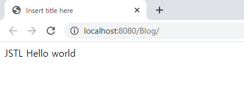
JSTLを使う方法にはライブラリより接頭辞の使い方が違います。
まず、ライブラリの週類は五つあります。一般プログラム言語を処理する変数宣言、出力、簡単な条件文、繰り返しを実行するコア―があり、数字や日付、時間などをフォーマットがあります。
文字列を扱う関数、データベースとXMLを扱うライブラリがあります。
この五つのライブラリは使う接頭辞が違います。
| ライブラリ | 機能 | URI識別子 | 接頭辞 |
|---|---|---|---|
| コアー | 一般プログラムで提供する制御処理を行うライブラリ | http://java.sun.com/jsp/jstl/core | c |
| フォーマッティング | 数字、日付、時間をフォーマティングする機能と国際化、多国語処理するライブラリ | http://java.sun.com/jsp/jstl/fmt | fmt |
| 関数 | 文字列を処理するライブラリ | http://java.sun.com/jsp/jstl/functions | fn |
| データベース | データベースと関連機能を処理するライブラリ | http://java.sun.com/jsp/jstl/sql | sql |
| XML処理 | XMLと関連 | http://java.sun.com/jsp/jstl/xml | x |
コア―ライブラリ
変数宣言と変数削除 <c:set/>, <c:remove/>
基本的にviewで使う変数はcontrollerの領域で宣言して受け取る構造になりますが、仕様によってJSPファイル(view)で変数を宣言して、または変数の再宣言、削除する必要があります。
<%@ page language="java" contentType="text/html; charset=UTF-8" pageEncoding="UTF-8"%> <!-- JSTL 宣言 --> <%@ taglib prefix="c" uri="http://java.sun.com/jsp/jstl/core"%> <!-- HTMLタグ開始 --> <!DOCTYPE html> <html> <head> <meta charset="UTF-8"> <title>Insert title here</title> </head> <body> <!-- 変数宣言 --> <c:set var="data" value="hello world" scope="page" /> <!-- 変数出力 --> ${data}<br /> <!-- 変数削除 --> <c:remove var="data" /> <!-- 変数出力 --> ${data} </body> </html>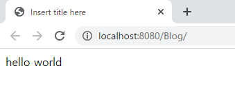
scopeの属性は変数のライフサイクルです。
pageは基本的なライフサイクルでブラウザに要請して応答するまで使う領域です。requestはpageより少し長いライフサイクルで要請、応答してまた要請する時まで保持するサイクル(サーバに受け取るのが可能)です。つまり、次の応答ページには変数の値がなくなります。
sessionの場合はサーバからsession満了するとなくなります。applicationの場合はユーザに関係ず、サーバプログラムが終了する時まで保持します。
変数出力 <c:out/>
JSTLには変数出力することはドールマークと中括弧を使って出力します。(${変数名})
でも、この変数の値にエスケープ文字が含めているとタグに認識されエラーになります。
<%@ page language="java" contentType="text/html; charset=UTF-8" pageEncoding="UTF-8"%> <!-- JSTL 宣言 --> <%@ taglib prefix="c" uri="http://java.sun.com/jsp/jstl/core"%> <!-- HTMLタグ開始 --> <!DOCTYPE html> <html> <head> <meta charset="UTF-8"> <title>Insert title here</title> </head> <body> <!-- 変数宣言 --> <c:set var="data" value="<Hello world>" /> <!-- 変数出力 --> ${data} </body> </html>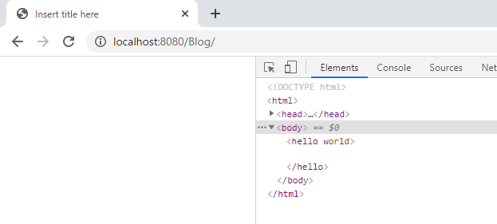
上の例をみれば<>変換されなくてそのままにタグとして認識されます。
でも、普通はエスケープ変換して出力しなければならないです。または値がnullの場合は基本値を処理する場合もあります。
<%@ page language="java" contentType="text/html; charset=UTF-8" pageEncoding="UTF-8"%> <!-- JSTL 宣言 --> <%@ taglib prefix="c" uri="http://java.sun.com/jsp/jstl/core"%> <!-- HTMLタグ開始 --> <!DOCTYPE html> <html> <head> <meta charset="UTF-8"> <title>Insert title here</title> </head> <body> <!-- 変数宣言 --> <c:set var="data" value="<Hello world>" /> <!-- 変数出力, エスケープ変換、nullの場合Not dataを出力する。 --> <c:out value="${data}" default="Not data" escapeXml="true"/> </body> </html>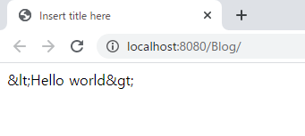
escapeXmlの属性にtrueにするとエスケープを変換してブラウザに表示されるようにします。設定しなければfalseになり、エスケープを変換をしません。
分岐文タグ <c:if/>
JSTLは基本的にプログラム言語なので分岐文と繰り返し文があります。
c:ifは分岐文で当該な条件式に真(true)の場合に、タグの中のタグが表示されます。
<%@ page language="java" contentType="text/html; charset=UTF-8" pageEncoding="UTF-8"%> <!-- JSTL 宣言 --> <%@ taglib prefix="c" uri="http://java.sun.com/jsp/jstl/core"%> <!-- HTMLタグ開始 --> <!DOCTYPE html> <html> <head> <meta charset="UTF-8"> <title>Insert title here</title> </head> <body> <!-- 変数宣言 --> <c:set var="data" value="0" scope="page"/> <!-- 分岐文のdataが0の場合 --> <c:if test="${data eq 0}"> <!-- if分岐文が真(true)なら出力 --> <div>Hello world</div> </c:if> </body> </html>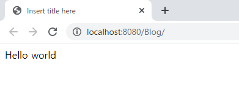
ここでscope属性は<c:set/>で使った属性と同じ意味です。
そしてtest属性で使ったeq比較表現式でempty、eq、neがあります。
emptyは変数が空いているかどうかを確認するし、eq(==)は同じ値なら真、ne(!=)は違う値なら真になります。
そして文字演算子だけではなく、比較演算子(<,>)と論理演算子(||,&&,!)なども使えます。
分岐文タグ <c:choose/>、<c:when/>、<c:otherwise/>
Javaの分岐文の種類はifとif~elseがあります。JSTLはif分岐タグはありますが、if~else分岐タグはありません。
代わりにswitchは似ている<c:choose/>、<c:when/>、<c:otherwise/>分岐があります。
<%@ page language="java" contentType="text/html; charset=UTF-8" pageEncoding="UTF-8"%> <!-- JSTL 宣言 --> <%@ taglib prefix="c" uri="http://java.sun.com/jsp/jstl/core"%> <!-- HTMLタグ開始 --> <!DOCTYPE html> <html> <head> <meta charset="UTF-8"> <title>Insert title here</title> </head> <body> <!-- 変数宣言 --> <c:set var="data" value="0" scope="page"/> <c:choose> <!-- 分岐文 dataより下の場合 --> <c:when test="${data < 0}"> <div>Minus</div> </c:when> <!-- 分岐文 dataの場合 --> <c:when test="${data eq 0}"> <div>Zero</div> </c:when> <!-- その以外 --> <c:otherwise> <div>Plus</div> </c:otherwise> </c:choose> </body> </html>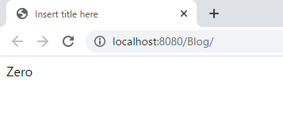
ここでc:chooseタグはJavaのswitchと同じなり、whenはJavaのcase、otherwiseはJavaのdefaultと同じ意味です。
結果は0なのでZeroのタグが画面に表示されました。
繰り返し文<c:forEach/>
分岐文があれば繰り返し文があります。繰り返し文は必須属性があります。
属性メソッド 説明 current 現在値 index ゼロ基盤(zero-based)インデックス値 count 1基盤(one-based)インデックス値 first 最初値可否 last 最後値可否 begin 開始値 end 終了値 step 増加値 <%@ page language="java" contentType="text/html; charset=UTF-8" pageEncoding="UTF-8"%> <!-- JSTL 宣言 --> <%@ taglib prefix="c" uri="http://java.sun.com/jsp/jstl/core"%> <!-- HTMLタグ開始 --> <!DOCTYPE html> <html> <head> <meta charset="UTF-8"> <title>Insert title here</title> </head> <body> <!-- 変数宣言 --> <c:set var="data" value="0" scope="page" /> <!-- forEachは整数範囲内で繰り返し --> <c:forEach var="i" begin="0" end="10" step="2" varStatus="x"> <!-- indexはbeginから開始してendまで終了、インデックス差は2です。 --> <!-- countは繰り返しが何回発生したかの値 --> <!-- iとxでiは繰り返し文のインデックスならxは繰り返し文で使う変数 --> <div>${x.index}(${x.count}) = ${i*10}</div> <!-- 繰り返し文の初めなら --> <c:if test="${x.first}"> <div>first = ${i*10}</div> </c:if> <!-- 繰り返し文の最後なら --> <c:if test="${x.last}"> <div>last = ${i*10}</div> </c:if> </c:forEach> </body> </html>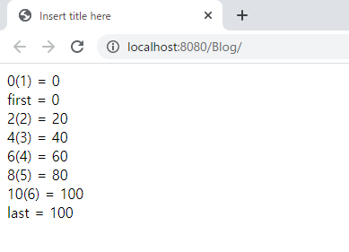
繰り返しタグ <c:forTokens/>
繰り返し文タグ<c:forEach/>と似ている属性種類を使いますが、itemsに条件データを置いてdelimsで区分(split)をしてiteraterパターン形式で繰り返します。
<%@ page language="java" contentType="text/html; charset=UTF-8" pageEncoding="UTF-8"%> <!-- JSTL 宣言 --> <%@ taglib prefix="c" uri="http://java.sun.com/jsp/jstl/core"%> <!-- HTMLタグ開始 --> <!DOCTYPE html> <html> <head> <meta charset="UTF-8"> <title>Insert title here</title> </head> <body> <!-- 変数宣言 --> <c:set var="data" value="0" scope="page" /> <!-- itemの文字で|で分け、繰り返し --> <c:forTokens var="color" items="red|orange|yellow|green|blue|indigo|purple" delims="|" varStatus="x" > ${x.count} = ${color} </c:forTokens> </body> </html>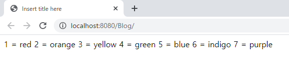
フォーマットライブラリ
フォーマットは整数や実数の桁数を含め文字に変換、あるいは文字を整数や実数に表現すること、そして日付と時間を文字に表現するタグです。
<fmt:formatNumber>
数字を文字に変換するフォーマットタグです。
<fmt:formatNumber value="numericValue" [type="{number|currency|percent}"] [pattern="customPattern"] [var="varName"] [scope="{page|request|session|application}"]/>typeの属性でnumberは文字を数字を表現、currencyはお金形式に表現、percentはパーセント形式に表現します。patternはその以外のパータンを設定することだし、varは変数設定です。
scope属性は<c:set/>で使った属性と同じ意味です。
<%@ page language="java" contentType="text/html; charset=UTF-8" pageEncoding="UTF-8"%> <!-- コア―ライブラリ --> <%@ taglib prefix="c" uri="http://java.sun.com/jsp/jstl/core"%> <!-- フォーマットライブラリ --> <%@ taglib prefix="fmt" uri="http://java.sun.com/jsp/jstl/fmt"%> <!-- HTMLタグ開始 --> <!DOCTYPE html> <html> <head> <meta charset="UTF-8"> <title>Insert title here</title> </head> <body> <!-- 地域設定 --> <fmt:setLocale value="ko_KR"/> <!-- タブの中で文字を千単位でコンマを追加する。 --> <p>number : <fmt:formatNumber type="number">1234567.89</fmt:formatNumber></p> <!-- タグの中で文字をお金単位で設定する。日本のお金は小数点が存在しないため、四捨五入する。 --> <p>currency : <fmt:formatNumber type="currency" currencySymbol="￥" >1234567.89</fmt:formatNumber> </p> <!-- パーセント処理なので100倍で表現する。 --> <p>percent : <fmt:formatNumber type="percent">0.159</fmt:formatNumber></p> <!-- フォーマットパターン設定する。(小数点処理)--> <p>pattern=".000" :<fmt:formatNumber value="1234567.1" pattern=".000" /></p> <!-- フォーマットパターン設定する。(小数点処理)--> <p>pattern="#,#00.0#":<fmt:formatNumber value="1234567.891" pattern="#,#00.0#"/></p> </body> </html>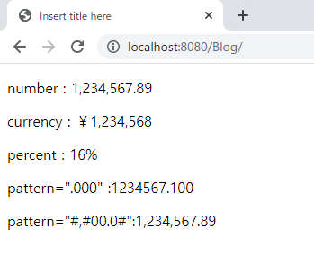
値はタグの中で値を設定することもできるし、valueの属性を利用することもできます。
<fmt:parseNumber/>
文字を数字に表現するタグです。
<fmt:parseNumber [type="{number|currency|percent}"] [pattern="customPattern"] [parseLocale="parseLocale"] [integerOnly="{true|false}"] [var="varName"] [scope="{page|request|session|application}"]>タグ属性は<fmt:formatNumber>と同じです。integerOnly属性がtrueの場合、値が実数の時に小数点を切り、整数だけ表現します。
<%@ page language="java" contentType="text/html; charset=UTF-8" pageEncoding="UTF-8"%> <!-- コア―ライブラリ --> <%@ taglib prefix="c" uri="http://java.sun.com/jsp/jstl/core"%> <!-- フォーマットライブラリ --> <%@ taglib prefix="fmt" uri="http://java.sun.com/jsp/jstl/fmt"%> <!-- HTMLタグ開始 --> <!DOCTYPE html> <html> <head> <meta charset="UTF-8"> <title>Insert title here</title> </head> <body> <p>number : <fmt:parseNumber value="1,234,567.89" type="number"/></p> <p>currency : <fmt:parseNumber value="12345abcdef.999" integerOnly="false" type="number" /></p> </body> </html>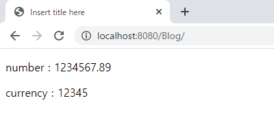
<fmt:formatDate/>
変数にJavaのDateクラスの値が設定されている場合、フォーマットによって画面に表示することができます。
<fmt:formatDate value="date" [type="{time|date|both}"] [dateStyle="{default|short|medium|long|full}"] [timeStyle="{default|short|medium|long|full}"] [pattern="customPattern"] [timeZone="timeZone"] [var="varName"] [scope="{page|request|session|application}"]/>dateStyleとtimeStyleはフォーマットスタイルの中さを設定してパターンはyyyy/MM/ddみたいにユーザがパータンを設定することができます。
timeZoneは接続地域を設定することができます。varは変数の設定でscope属性は<c:set/>で使った属性と同じ意味です。
<%@ page language="java" contentType="text/html; charset=UTF-8" pageEncoding="UTF-8"%> <!-- コア―ライブラリ --> <%@ taglib prefix="c" uri="http://java.sun.com/jsp/jstl/core"%> <!-- フォーマットライブラリ --> <%@ taglib prefix="fmt" uri="http://java.sun.com/jsp/jstl/fmt"%> <!-- HTMLタグ開始 --> <!DOCTYPE html> <html> <head> <meta charset="UTF-8"> <title>Insert title here</title> </head> <body> <c:set var="now" value="<%= new java.util.Date() %>" /> <p> date full : <fmt:formatDate value="${now}" type="date" dateStyle="full" /></p> <p> date short : <fmt:formatDate value="${now}" type="date" dateStyle="short" /></p> <p> time : <fmt:formatDate value="${now}" type="time" /></p> <p> both full : <fmt:formatDate value="${now}" type="both" dateStyle="full" timeStyle="full" /></p> <p> pattern 1 : <fmt:formatDate value="${now}" pattern="yyyy-MM-dd aa hh:mm:ss" /></p> <p> pattern 2 : <fmt:formatDate value="${now}" pattern="yyyy-MM-dd hh:mm:ss" /></p> </body> </html>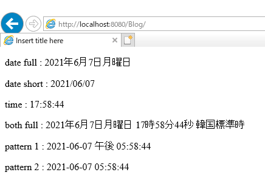
次の投稿でJSTLの関数ライブラリとデータベースライブラリを整理します。
ここまでWeb Spring frameworkのviewで使うプログラム言語(JSTL) - コア―、フォーマットに関する説明でした。
ご不明なところや間違いところがあればコメントしてください。
- [Java] Web serviceのweb.xmlでエラーページ設定2019/10/14 20:13:44
- [Java] 48. JPAでQueryを使う方法(JPQLクエリを作成する方法)2019/10/13 22:55:52
- [Java] 47. JPAのEntityクラスのリファレンス設定(cascade, fetch)2019/10/13 00:40:08
- [Java] 46. JPAのEntityクラスの基本設定(@GeneratedValue、 @ManyToMany)2019/10/11 07:30:14
- [Java] 45. JPAを設定する方法2019/10/10 07:29:43
- [Java] 44. Web Spring frameworkのviewで使うプログラム言語(JSTL) - XML2019/10/09 07:34:08
- [Java] 43. Web Spring frameworkのviewで使うプログラム言語(JSTL) - 関数、データベース2019/10/08 07:43:33
- [Java] 42. Web Spring frameworkのviewで使うプログラム言語(JSTL) - コア―、フォーマット2019/10/07 07:38:13
- [Java] 41. Web Spring webframeworkのControllerからajaxの要請する時、jsonタイプのデータを返却する方法2019/10/04 19:24:43
- [Java] 40. Web Spring frameworkでControllerを扱う方法2019/10/03 20:02:06
- [Java] 39. Spring Web Frameworkを利用してウェブサービスプロジェクトを作成する方法2019/10/02 21:00:22
- [Java] 38. Javaでウェブサービスプロジェクト(JSP Servlet)を作成する方法2019/10/01 21:48:08
- [Java] 37.イクリプス(eclipse)でトムキャット(tomcat)を設定する方法2019/09/30 22:19:34
- [Java] 36.コーディングする時、よく使うコーディングパターンとステップ数を減らす方法2019/09/27 20:39:09
- [Java] 35. コーディング規約設定(Google Standard coding style)2019/09/26 21:31:25
- [Java] WebSocketでチャット履歴をローディングする方法2021/06/15 18:34:45
- [Java] WebSocketを利用してユーザ(サイト運用者)が他のユーザとチャットする方法2021/06/15 17:20:08
- [Design pattern] 1-2. ビルダーパターン(Builder pattern)2021/06/11 19:06:28
- [Design pattern] 1-1. シングルトンパターン(Singleton pattern)2021/06/09 19:40:05
- [Design Pattern] デザインパターンの紹介2021/06/08 20:42:36
- [Tools] Dbeaver(無料Sql queryブラウザツール)2021/04/28 18:26:49
- [Bootstrap] HTMLデザインのフレームワークのBootstrap紹介2020/07/30 19:06:36
- [Python] メール(smtplib)を送信する方法2020/07/27 18:38:43
- [Python] HttpConnection(requestsモジュール)でウェブサーバーで接続する方法2020/07/20 14:41:51
- [Python] Excel(openpyxl)を扱う方法2020/07/16 16:40:31
- [Python] ファイル圧縮、解凍(zipfile)する方法2020/07/14 19:14:22
- [Python] Apache cgiでPythonを使う方法2020/07/09 19:58:19
- [Python] Web serverを起動する方法(http.server)2020/07/09 00:13:13
- [Python] WebSocketを使う方法2020/07/07 17:29:18
- [Python] PythonとJavaのソケット通信する方法2020/07/03 18:35:50